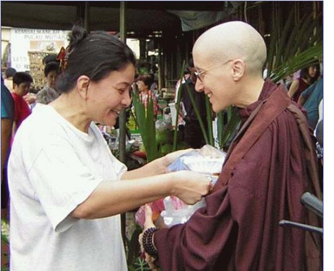
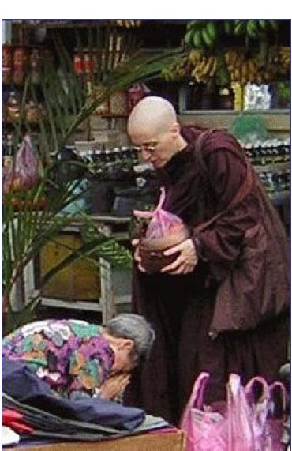

My alms bowl is central to my life. A symbol of the Theravada Buddhist monastic tradition in which I trained, it is the soul of my mendicancy — coming empty-handed before the laity to receive material nourishment and responding to their generosity. Sometimes that means reciprocating with a teaching from the Buddha, sometimes with a blessing chant or simply an expression of gratitude and kindness.
I am a beggar, and I must also be true. It is not easy to be a true beggar. I have to be worthy to be fed by the kindness of others and have all my needs provided. This way is rare and precious, as are acts of generosity in a world so driven by greed and selfishness.
Cultivating the spiritual path with integrity demands much of a beggar, primarily a faithful allegiance to the Vinaya, the code by which I live, as well as a sincere appreciation and respect for my supporters, their devotion and hard work to obtain, prepare and bring offerings, even at considerable sacrifice. It also calls for contentment with little — a simplicity of being and a commitment to renounce on many levels.
These qualities develop through a vigilance of heart that is difficult to practise in a large, well-funded institution. In those days when my monastic requisites, especially meals, were complete, assured and generally abundant, I used self-abstinence to remind myself of the value of all that was given to us. On occasion, we also went on tudong or walked for alms in the nearby villages, accepting whatever we received as our meal for the day. But these were temporary privations — not a sustained way of life. They bore the flavor of heroic adventure but could hardly reflect the daily grind of spiritual endeavour.
It was only after I left the mother monastery to live on my own in New Zealand, a non-Buddhist country, that I came to know true choicelessness, at times facing physical hunger or a powerless isolation. This propelled me into a level of faith not demanded of me before, especially on days when I received very little, if anything, that would serve as a meal.
And so I learnt to meditate on the emptiness of my bowl — consciously relinquishing desire for food and accepting hunger. Bearing hunger with faith led me beyond despair to a gratitude and joy for what I did receive — a feeling of fullness that was not borne of food.
These hardships ripened me. I have gone hungry. But I have been able to keep going because every part of my body is made up of the loving-kindness from generous people who have cared for me for years and years, and my life is composed of pure kindness and thanksgiving.
Now, in my passage through Malaysia, I have again taken the opportunity to walk pindapat in the local market of Penang where it is surprisingly easy to beg. I knew I would be well-fed.
With my bowl secure in its harness around my shoulder and cradling it in my palms, I stood between the main fruit and vegetable vendors and rows of flimsy stalls that display a collage of baby clothes, ladies' handbags, jewellery, household items, and colourful trinkets.
I chanted for each person who stopped to make offerings. Within minutes, my bowl was weighed down with fruits, biscuits, pancakes, rice and coconut delicacies, and fried noodles — each wrapped in a colourful plastic bag.
The early Sunday morning shoppers, primarily local Chinese, know what to do when they meet someone in robes going for alms. In this society, Buddhist nuns rarely go pindapat, and the monks who beg often accept money. Today they saw a nun — a foreigner — receiving only offerings of food into her bowl.
Word spread. Whenever people tried to give money, I had to be quick to cover my bowl with my hand. Amazed, they returned with sweetmeats, sticky rice, or fruits. More came, and when my bowl was brimming, they piled their offerings into a growing collection of pink plastic bags at my feet. With all this attention, I was distracted from my normal practice of focusing on the bowl and meditating on emptiness.
The first time someone knelt and made anjali, I quickly removed my sandals before chanting a blessing, Sukhi hotu, avera hotu, abhayapaja hotu. I had not wandered out barefoot as the Buddha would have done because of the rubbish everywhere but it felt wrong to receive her respect wearing shoes. Remembering how I had thrown off my sandals and walked the filthy streets of Yangon last year to beg for alms inspired me to be barefoot again.
I continued to stand, softly chanting the Dhammacakkappavattana Sutta to myself and giving blessings each time someone placed more food in my bowl. I felt the turning of the wheel of Dharma and reflected on the thousands of years that this way of begging and receiving has nurtured the faithful. And here again, it was being upheld by simple acts of kindness — now a child with a bag of fried rolls, now a woman with jackfruit, now an Indian man curious to know from which country I hailed.
Some asked whether to place their offerings directly into the bags at my feet when they saw the bowl overflowing. I wanted at least to accept each offering in my hand if I could not with my bowl, and so create a sense of connection and relationship, chant a blessing and bear witness to their kindness.
It was in one of these moments between the overflow of the bowl and the rush of generosity that I suddenly felt a hypocrite. I was well-fed, staying with my devotee, lacking nothing, and the bags were spilling out beside me.
What right did I have to stand there and beg? How could I dare hold my bowl out to be filled again and again when so much had already been given? What right did I have even to begin to beg?
Stifling and sweating in my robes, these questions crowded my mind. I remembered the story of the Sorcerer's Apprentice who tried to clean while the brooms multiplied and kept bringing more water... It seemed absurd to be juggling so many bags of food when I had no hunger in my belly.
Not even half an hour had elapsed. Embarrassed, anxious, and feeling unworthy of receiving the tide of generosity, I fretfully looked about hoping my devotee would return soon to collect me. And then, to calm my mind, I began to chant more loudly.
Contemplating the Four Noble Truths, with eyes downcast, I watched the feet of all who passed me — sandals of every colour and style, high heels and broken shoes, human beings of all ages, shuffling, hobbling or brisk in pace. Looking at their faces, I saw the bent, disabled and healthy, the dishevelled and well-dressed, the shrivelled and overweight, smiles and grimaces, distracted expressions and down-turned mouths, mothers, infants, a father grasping the hand of his small son, bicycles and litter, traders shouting and the smells of the market, the world — the World.
My heart grew bright with compassion. I knew that I was standing there to let my bowl be filled again and again by those who love Truth. Hungry or not, I had every right to receive what they freely gave.
I was not abusing that beauty because it was not for me that they filled the bowl. I was a beggar for love of that blessedness, and the filling and emptying of my bowl was the natural process of each of our lives being remembered and honoured in random acts of kindness.
I receive and I give back.